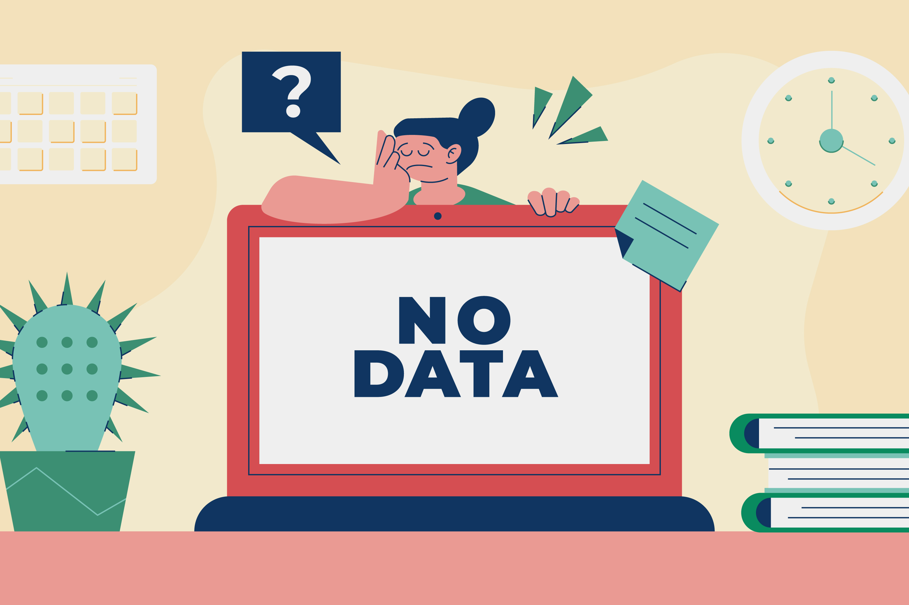

<!-- <ion-header [translucent]="true">
  <ion-toolbar color="primary">
    <ion-back-button
      slot="start"
      defaultHref=""
      (click)="dismiss()"
    ></ion-back-button>
    <ion-title>Details</ion-title>
  </ion-toolbar>
</ion-header> -->

<ion-content [fullscreen]="true">
  <ion-item lines="none">
    
  </ion-item>
</ion-content>
